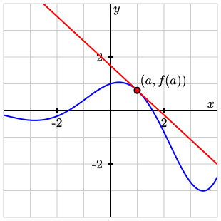
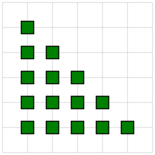

Section 6.1 Annotating a diagram
As we saw in Section 1.2, authors can include annotations within their PreFigure source that describe how a reader will explore the diagram using the
diagcess library.
Subsection 6.1.1 The diagcess library
Since annotations will be read by the
diagcess library, let’s take a moment to consider how a reader will interact with the annotations in a diagram. As we will see momentarily, the annotations will essentially form what mathematicians call a tree. That is, there is a top-level description of the entire diagram with the ability to explore various components in greater detail. Readers will navigate this tree using the arrow keys. The Down arrow requests more details on the component currently being explored while the Right arrow asks for the next detail of the current component. When an arrow key is pressed, a beep called an “earcon” notifies the reader that there are no more details available at that level.The two most common key presses are “O”, which will sonify an element if the author has enabled this feature, and “X”, which toggles expert mode, about which more will be said later.
When designing annotations, an author is well served by considering their audience. For instance, many blind readers are fairly experienced navigating an HTML page with a screenreader. The
diagcess library provides screenreading capabilities for included PreFigure diagrams. As an author, how will you verbally describe the diagram succinctly and completely? How will you organize the components of a diagram into groups that contribute to communicating the diagram’s intended meaning? How will you explain the structure of such a group?In addition, low-vision readers may not be able to interpret the meaning of a diagram in the same way that a sighted reader might. However, the
diagcess library highlights the component currently being explored by zooming in on it and outlining it in yellow so that other elements move into the background. In this way, many low-vision readers can perceive the individual components of a diagram and how they fit together into a whole.Even for sighted readers, annotations can provide more details about a diagram and call attention to specific components of the diagram so that their meaning is not overlooked. Considering the needs of these different audiences can be a challenge but will inevitably lead to more effective diagrams.
While annotations are included in the same PreFigure source, their authoring is typically a separate process from creating the graphical content. One reason for this is that graphical components lie on top of one another in the order in which they are added to the diagram. For example, we usually want a point to lie on top of a line passing through that point so we will include the line and then the point when creating the graphical components. However, when annotating the diagram, we may wish to call attention to the point first and then the line later. Keeping the annotations separate from the graphical content gives us more flexibilty in annotating a diagram.
Perhaps more importantly, however, experience shows that annotating a diagram really should feel like a separate process. When creating the graphical content, we may, for instance, add a line in a particular orientation so that it doesn’t overlap with another part of the diagram and stroke it with a particular color to create constrast with other elements. When creating the annotations, we are thinking about the mathematical meaning of that line, why we have included it at all, and how it is related to the other elements in the diagram. These are two different sets of questions, and authors are well served by addressing them separately.
Subsection 6.1.2 The annotation tree
To begin describing the annotation tree, let’s return to the example we considered in Section 1.2, which is shown again, with annotations, in Figure 2.3.1.

<diagram dimensions="(300, 300)" margins="5">
<definition> a=1 </definition>
<definition> f(x)=exp(x/3)*cos(x) </definition>
<coordinates bbox="[-4,-4,4,4]">
<grid-axes xlabel="x" ylabel="y"/>
<graph at="function" function="f"/>
<tangent-line at="tangent" function="f" point="a"/>
<group at="point">
<point p="(a, f(a))"/>
<label anchor="(a,f(a))" alignment="ne">
<m>(a,f(a))</m>
</label>
</group>
</coordinates>
<annotations>
<annotation ref="figure"
text="The graph of a function and its tangent line at the point a equals 1">
<annotation ref="graph-tangent"
text="The graph and its tangent line">
<annotation ref="function"
text="The graph of the function f"
sonify="yes"/>
<annotation ref="point"
text="The point a comma f of a"/>
<annotation ref="tangent"
text="The tangent line to the graph of f at the point"
sonify="yes"
speech="This line is y equals f of a plus the derivative at a times the quantity x minus a"/>
</annotation>
</annotation>
</annotations>
</diagram>
This example illustrates some important points.
- All the annotations are under a single
<annotations>element, and each nested<annotation>element corresponds to a node in the annotations tree. - There is a single top-level
<annotation>element, which has the attribute@ref="figure". In general, the@refattribute should point to a handle in the tree of graphical components. The handle"figure"is implicit in the top-level<diagram>element. The@textattribute gives a piece of text that will be displayed and vocalized when the focus goes to the diagram. You may view this as alt-text for the entire diagram so it should be a concise, yet thorough, description of the diagram. - The
<grid-axes>element does not have a handle or an associated annotation node, but a set of annotations for it will be automatically added to the annnotations tree, if such a tree is included in the PreFigure source. There is a node for the<grid-axes>and then two child nodes, one for the grid and one for the axes. - The second node that is on the same level as the
<grid-axes>annotation has@ref="graph-tangent. In this case, there is no graphical component with this handle, which shows that the@refattribute need not point to a specific graphical component. This annotation node, however, has children, each with a@refvalue that points to a graphical component. Therefore, when the focus goes to the node with@ref="graph-tangent", all the components referenced by a child will be highlighted. - When we descend from the node with
@ref="graph-tangent", there are three children that point to the graph, the point, and the tangent line. Notice that the node with attribute@ref="point"refers to a<group>that includes both the point and the label. When the focus goes to this node, both of those components will be highlighted. While this example illustrates the general behavior of a<group>referenced by an annotation, the same effect is produced by including a label inside the point as demonstrated in Section 3.5. - The graph is sonified with
@sonify="yes". When the focus goes to this node and the reader presses “O”, an aural rendering of the graph will be played. - The node that points to the tangent line has a
@speechattribute, which has more details about the line. When the reader presses “X”, then the value of this attribute replaces the value of the@textattribute and is displayed and vocalized. - While it is not included in this example, an
<annotation>element can have the attribute@circular="yes". When exploring the children of such a node, the focus will return to the first child after we have explored the last child.
Authors should note that everything that is visible is annotated and will, at some point, be highlighted. This is a good practice that should generally be adopted. Suppose, for instance, that the
<graph-axes> element is not annotated. A low-vision reader may percevie the presence of these components without being provided an explanation of their purpose.Also notice how the tree-like structure of the annotations allows a reader to delve into different features with increasing detail. This allows the reader to skip over a branch of the tree, if desired, and go on to features that are of greater interest.
Subsection 6.1.3 Annotations within repeat elements
We said earlier that the process of creating annotations should generally be separate from the process of illustrating. One exception to this is within a
<repeat> element.Suppose we have a
<repeat> element with @parameter="k=5..7" and inside this element is a <point> with handle @at="point". This will produce three points for each iteration of the <repeat> element, and these points will be given handles @at="point-k=5, @at="point-k=6, and @at="point-k=7. In this way, one could annotate these three points.If a
<repeat> element is instead meant to iterate over a list, the behavior is slightly different. Suppose the <repeat> element is defined with @parameter="p in ((0,0),(1,2),(0,4))" and that inside the <repeat> there is a <point> with handle @at="point". In this case, the times through the iteration are numbered so that the three resulting points have handles @at="point-p=0", @at="point-p=1", and @at="point-p=2".More complicated uses of the
<repeat> element, however, can make annotations tedious and difficult to maintain. For this reason, annotations can be added to graphical components and referenced from the annotation tree. This can ease the process of annotating components inside a <repeat>, as seen in Figure 6.1.3.
<repeat> element.<diagram dimensions="(300,300)" margins="5">
<coordinates bbox="(-1,-1,5,5)">
<definition>ordinals=['first', 'second', 'third', 'fourth', 'fifth']</definition>
<grid at="grid"/>
<repeat at="array" parameter="col=0..4"
annotate="yes"
text="The array of squares">
<repeat at="column" parameter="row=0..4-col"
annotate="yes" circular="yes"
text="A column of ${5-col} squares">
<rectangle at="square" center="(col, row)"
dimensions="(0.5,0.5)"
stroke="black" fill="green"
annotate="yes"
text="The ${ordinals[row]} square in the ${ordinals[col]} column"/>
</repeat>
</repeat>
</coordinates>
<annotations>
<annotation ref="figure"
text="A triangular array of squares">
<annotation ref="grid"
text="A rectangular grid"/>
<annotation ref="array"/>
</annotation>
</annotations>
</diagram>
This leads to relatively simple and easy to maintain source if, say, we want to add or remove a column of squares. Here is how this works:
- Notice that some elements are supplied with an attribute
@annotate="yes". When the graphical component is created, an<annotation>is created that can be referenced using its handle. The annotation attributes, such as@textand@circular, included in the graphical component are passed on to the resulting<annotation>. - In this case, the two
<repeat>elements are both given this attrbute along with the child<rectangle>element. Behind the scenes, the<repeat>element creates a<group>with the resulting components added. Annotating the<repeat>element is therefore the same as annotating a<group>as we saw above. - Notice how the
@textattributes can respond to the different values of the parameters by including pieces of text inside${...}, which are then evaluted in the current namespace. - The resulting annotations naturally inherit the tree-like structure from the graphical components that define them. We can therefore reference this entire sub-tree by simply referring to the handle
@ref="array"of the top-level node. - This example illustrates the use of the
@circularattribute. Once we have examined all the squares in a column, we return to the first one and begin anew.
While any graphical component can be annotated in this way, this feature is included primarily as a way to ease the annotation of diagrams created with a
<repeat> element. As mentioned earlier, we encourage authors to separate the processes of illustrating and annotating.